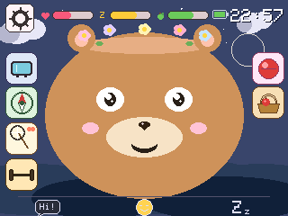
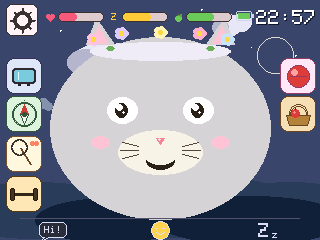
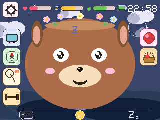
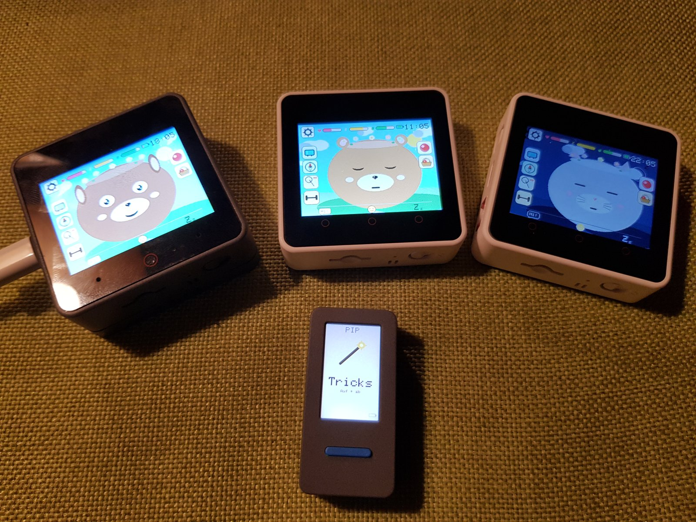
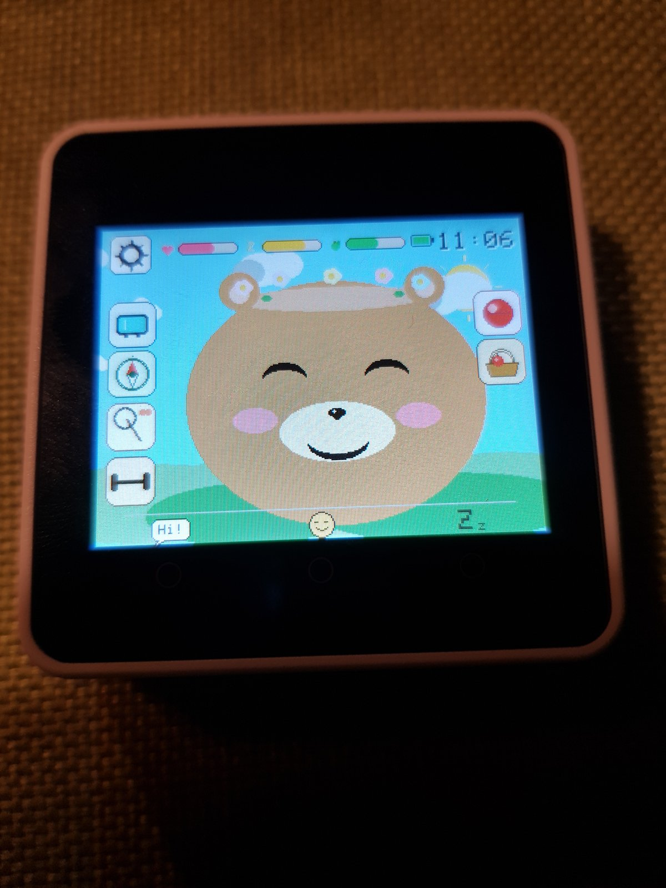

Muffin
M5Stack CoreS3 + Module-LLM
- Listens to its name + offline AI
- Front camera + selfies
- Web radio
- Touch UI
Open-source virtual pets for M5Stack devices — playful for kids, inspectable for parents and hackable for makers.
✨ The flagship pet, Muffin, hears you call its name and understands what you ask — fully offline, running its own small AI on a Module-LLM expansion.
Real Goo-Goo, real hand. 10 seconds on the desk — click 🔊 for sound.
Same source tree. Pick the pet that matches your hardware — and optionally add a Pip as a pocket-sized companion device that pairs with any of them.
M5Stack CoreS3 + Module-LLM
M5Stack CoreS3 (no module)
M5Stack Core2
M5StickC PLUS2
Note: the pet illustrations above are stylised demos. Real screenshots from the actual hardware are below.
Each pet renders one of three animals on screen — Bear, Cat or Dog. You pick during first-run setup; you can switch any time in Settings. Real screenshots from a Goo-Goo (Core2):





Pick one pet kit, plus optionally a Pip as accessory. All from the official M5Stack store; no soldering, all USB-C.
Pip: 5 basics
Idle, happy, excited, in love, sleepy, asleep, sad, startled, laughing, eating, speaking — driven by needs and interaction. Pip has the basic five (idle / happy / excited / sleeping / startled).
Muffin only
Muffin listens for its own name. Call “Muffin!”, then tell it what to do — “eat something”, “let’s play”, “go to sleep”, “turn on the radio”, “let’s dance”. The pet understands plain sentences and triggers the matching action. Everything runs offline on a small built-in AI: speech-to-text by Whisper, intent classification by Qwen3-0.6B, both on the Module-LLM expansion. No cloud, no microphone leaving the device.
All pets
Tilt the device upright, then left and right within five seconds — the pet bursts into song for eight seconds, then opens its ear and listens for applause. Loud clapping rewards a happy reaction; silence gets a small disappointment. The pet uses its built-in microphone to measure peak loudness.
Muffin / Visu only
The front camera runs a lightweight skin-tone detector. When you walk past or lean in, the pet greets you with a happy face and a chirpy sound — once per cooldown so it doesn't get annoying. The detector goes silent while the pet is sleeping, listening for voice or playing radio.
Muffin / Visu only
Open the camera in the media menu, the pet shows up in the bottom-left corner of the live preview. Tap the round shutter button on the right edge to capture; the gallery shows up to five photos as a thumbnail grid, tap a thumb to view it big with the pet alongside.
Muffin / Visu / Goo-Goo
WDR Die Maus on German, Fun Kids UK on English. The pet sways to the music with little notes drifting up. No tracking; the stations are public broadcasters.
Muffin / Visu / Goo-Goo
Two pets in radio range can swap gifts, hearts, food and toys via ESP-NOW. Both kids tap a big “Verabreden” button at the same time to pair up, then the four send buttons appear. No internet, no accounts.
Muffin / Visu / Goo-Goo
Sport mode (squats, jumps, yoga via IMU), foraging for food, toy play with five toys, scene travel between bedroom, meadow, forest, beach, city, desert and space — each scene with its own activity.
Muffin / Visu / Goo-Goo
The bedroom window mirrors your local weather and the night scene shows the actual moon phase. Location is resolved once via IP, then cached for a day.
Muffin / Visu / Goo-Goo
Defaults to 30 minutes per power-on, configurable 5–120 minutes via a parent web page. After the limit the pet plays a bedtime animation and shuts down with a 30-minute lockout.
Pip + Muffin / Visu / Goo-Goo
Pip cycles through five pages with BtnA — an empty “pick one” safe-carry page, Apple / Carrot / Bone treats, and Tricks. On a treat page a wrist-flick throws it via ESP-NOW; within ~200 ms the home pet eats it with the matching face and a happy sound. No router needed; enable “Pip mode” in the home pet's Settings to receive.
Pip + Muffin / Visu / Goo-Goo
On the Tricks page each up-or-down flick of Pip counts a peak. After a short pause the count is sent to the home pet, which hops that many times in a row — laughing face, giggle sound and a heart per landing. The kid is teaching it a quick trick.
Pixel Pets was made together by Justus (10) and his dad Marcel. Justus brought the ideas, tested every build tirelessly and made the design calls — how the pet should feel, which mini-games belong in which scene, which animations stay. Dad's job was to “translate” this input for the AI doing the coding, and to add a bit of technical know-how on the side. The first beta was finished on a Sunday afternoon, sitting next to Justus on the sofa; the boring polish (CI, partition tables, README rewrites) was dad's evening work. Every line of firmware came from Claude (Anthropic) under our direction.
Voice control on Muffin, gift exchange between two pets over ESP-NOW Friends mode, and a Pip wrist-flick treat throw — all in two minutes, on real hardware.
A short walkthrough of the project: what we built, why kid-safe hardware matters, and how Justus actually used Claude AI to bring this to life.
Everything runs on the device. The only network calls are an optional weather lookup and the kid-friendly web radio stream — both you can turn off.
MIT-licensed firmware on GitHub. Every interaction the pet has is in the source. No hidden behaviour, no telemetry.
The pet decides when bedtime is. After the configured session length, it plays a sleep animation and shuts down — even if your kid wants “five more minutes”.
Volume and brightness are configurable. The pet babbles softly when idle but never shouts; the wake-up sounds are short pet noises, not human speech.
When the pet is on Wi-Fi, a small web page at <pet>-setup.local shows total play time and battery, and lets you adjust the daily session limit (5–120 min) — without taking the pet from your kid.
On the variants with a camera (Muffin, Visu) or microphone (Muffin), no audio or video ever leaves the pet. Selfies live on its own flash; speech is processed offline on the on-board AI module. The mic signal never reaches the network.
Setup difficulty differs a lot between pets — Goo-Goo is the easiest, Muffin the most involved (it includes a Linux-on-the-LLM-module step). Pick the dedicated guide that matches the hardware you have:
Easiest · Core2
Plug in USB, flash, run. ~1 hour.
setup-goo-goo.md →Easy · CoreS3
Same idea on CoreS3 hardware.
setup-visu.md →Medium · StickC PLUS2
S3 revision needs a manual download-mode procedure.
setup-pip.md →Advanced · CoreS3 + Module-LLM
Plus a one-time Linux setup on the LLM module (ADB, Whisper, Qwen3).
setup-muffin.md →git clone https://github.com/marceld23/Pixel-Pets.git
cd Pixel-Pets
pip install platformio # if you don't have itOne-time Linux setup on the Module-LLM via ADB: install Whisper-Base, Qwen3-0.6B, disable TTS, silence the wake-up WAV. Skip this step for Goo-Goo, Visu and Pip.
pio run -e core2 -t upload # Goo-Goo
pio run -e visu -t upload # Visu
pio run -e pip -t upload # Pip (PICO) — pip-s3 for S3 revision
pio run -e cores3 -t upload # Muffin (after Step 2)Per-pet flashing details (USB driver, COM-port detection, S3 download-mode procedure) are in the dedicated guides linked above. The repo's docs index has the rest: